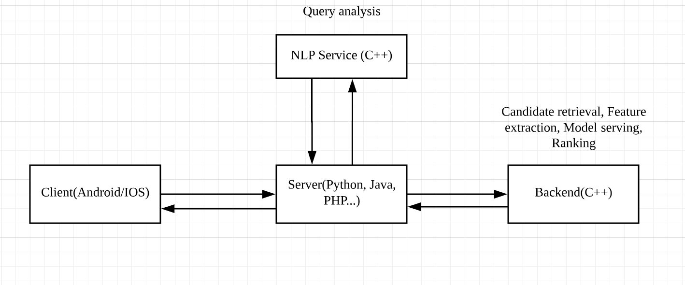

- 00 开篇词 从工程的角度深入理解Python.md
- 01 如何逐步突破，成为Python高手？.md
- 02 Jupyter Notebook为什么是现代Python的必学技术？.md
- 03 列表和元组，到底用哪一个？.md
- 04 字典、集合，你真的了解吗？.md
- 05 深入浅出字符串.md
- 06 Python “黑箱”：输入与输出.md
- 07 修炼基本功：条件与循环.md
- 08 异常处理：如何提高程序的稳定性？.md
- 09 不可或缺的自定义函数.md
- 10 简约不简单的匿名函数.md
- 11 面向对象（上）：从生活中的类比说起.md
- 12 面向对象（下）：如何实现一个搜索引擎？.md
- 13 搭建积木：Python 模块化.md
- 14 答疑（一）：列表和元组的内部实现是怎样的？.md
- 15 Python对象的比较、拷贝.md
- 16 值传递，引用传递or其他，Python里参数是如何传递的？.md
- 17 强大的装饰器.md
- 18 metaclass，是潘多拉魔盒还是阿拉丁神灯？.md
- 19 深入理解迭代器和生成器.md
- 20 揭秘 Python 协程.md
- 21 Python并发编程之Futures.md
- 22 并发编程之Asyncio.md
- 23 你真的懂Python GIL（全局解释器锁）吗？.md
- 24 带你解析 Python 垃圾回收机制.md
- 25 答疑（二）：GIL与多线程是什么关系呢？.md
- 26 活都来不及干了，还有空注意代码风格？！.md
- 27 学会合理分解代码，提高代码可读性.md
- 28 如何合理利用assert？.md
- 29 巧用上下文管理器和With语句精简代码.md
- 30 真的有必要写单元测试吗？.md
- 31 pdb & cProfile：调试和性能分析的法宝.md
- 32 答疑（三）：如何选择合适的异常处理方式？.md
- 33 带你初探量化世界.md
- 34 RESTful & Socket：搭建交易执行层核心.md
- 35 RESTful & Socket：行情数据对接和抓取.md
- 36 Pandas & Numpy：策略与回测系统.md
- 37 Kafka & ZMQ：自动化交易流水线.md
- 38 MySQL：日志和数据存储系统.md
- 39 Django：搭建监控平台.md
- 40 总结：Python中的数据结构与算法全景.md
- 41 硅谷一线互联网公司的工作体验.md
- 42 细数技术研发的注意事项.md
- 43 Q&A：聊一聊职业发展和选择.md
- 加餐 带你上手SWIG：一份清晰好用的SWIG编程实践指南.md
- 结束语 技术之外的几点成长建议.md
42 细数技术研发的注意事项
你好，我是景霄。
技术研发一直以来都是各大公司的核心部分之一，其质量的好坏直接影响到了产品的质量以及用户对产品的体验。如何建立一套规范、健全的开发体系，就显得尤为重要。今天我就和你聊聊技术研发的注意事项。
选择合适的编程语言
比如我们正在开发一个系统，首先，根据具体的需求，我们需要对系统的各个部分选择合适的编程语言。一般来说，infra这层我们更偏向于使用C++，而纯的服务器端则是以Python、Java、PHP等等为主。以搜索引擎为例，下面我画了一个它的简略架构图：

你可以看到，大概的工作流程是：用户在客户端（client）输入一个查询（query），发送请求（request）到达服务器端（server-side）；服务器端首先向NLP service发请求，并对请求进行分析，等到拿到各项信号（signal）后，再向后端（backend）发送请求；后端会做特征抽取（feature extraction），利用ML 模型进行结果的检索（candidate retrieval）、排序，最后再把结果返回给服务器端和客户端。
这里的NLP Service和后端，我们都会使用C++。因为这部分的处理最为复杂和耗时，都涉及到了特征抽取和model serving，对延迟（latency）的要求极高，只有C/C++这类语言才能满足需求。
而服务器端或者叫中间层（middle tier），我们则会使用Python、Java、PHP等语言。因为这部分并没有特别复杂的处理和对延迟的高需求，主要是以一些业务逻辑为主；并且，对程序员来说，使用这种高级语言也更容易上手和调试。
合理使用缓存
缓存（cache）在实际工程中十分重要，可以想像，如果没了缓存，我们今天所用的绝大多数产品估计都会崩溃。缓存为我们节约了大量的CPU 容量（capacity）和延迟。
还是以刚刚的搜索引擎系统为例，我们在客户端、服务器端和后端都会设置缓存。在客户端，我们一般会缓存用户的搜索记录，比如当你点击搜索框时，自动弹出的建议关键词的前几个，就可以是缓存的结果。这不需要向服务器端发请求，可以直接从客户端下载。
而在服务器端，我们也会设置缓存来存储一些搜索结果。这样，如果同一个用户多次发送相同的请求，就不需要再向后端请求，直接从缓存里面拿结果就可以了，快速又高效。
同样的，后端也需要缓存。比如在model serving这块儿，我们通常会有几个小时的缓存，不然每次提供实时的在线服务时，对CPU的负荷很大，延迟也会很高。
总而言之，如果没了缓存，容易造成很多问题。
- 服务器负荷迅速飙升，崩溃的几率大大增加。
- 端对端的延迟迅速飙升，请求超时的概率大大增加。
但是不是缓存越多就越好呢？显然也不是。
第一，通常来说，缓存比较昂贵，所以在使用上，我们都会有一个限度，不能无限制索取。
第二，缓存不是万能的，过度增加缓存，也会损害用户的产品体验。比如搜索结果的retrieval和排序这两块，理想状况下，肯定是做实时的model serving最好，因为这样对用户的个性化推荐更准确和实时。之所以会对model有几个小时的缓存，更多的是出于性能的考虑，但如果把缓存从几小时改为几天，显然不合适，无疑会对用户的产品体验造成极大的负面影响。
因此，缓存到底取多久、取多少，往往是用户对产品参与度和性能的一个权衡，需要根据一些具体的分析以及A/B测试做出决定。
健全的日志记录系统
健全的日志记录系统也是尤其关键的一点。大型公司的系统，往往由成千十万个小系统组合而来，如果发生故障，比如Google、Facebook的某项服务突然宕机了，我们就需要以最快的速度找出原因并做出修复。这靠的是什么呢？靠的正是健全的日志记录系统，使得我们能够方便地分解错误原因，一层一层追溯，直到找到根源。
一般来说，在线上环境中，我们需要两种类型的日志记录模式。
一种是实时logging，考虑到服务器的压力，通常会做降采样（downsampling），比如log实际流量的1%。这样的好处是，可以及时跟踪各项指标，如果有情况，立即触发警报（alert）。
比如，某天的中午12点，一位工程师push了一段会造成服务器奔溃的代码进入产品，实时logging检测到异常，发出警报，这时有关人员便会进行排查。如果发现这个代码的push时间和警报触发时间一致，就能够最快地恢复（revert），最小化其带来的负面影响。
同时，实时logging也有利于我们进行各种线上实验。比如，ML组的A/B测试常常需要调参，我们的通常做法，就是每隔几小时查看实时 logging的table，根据各项指标，适度调整参数。
第二种是每天更新一次也就是daily的 full logging，有助于我们统计一些信息，进行分析，比如做成仪表板（dashboard），方便查看每天的各项指标，来跟踪进度。此外，full logging的table，也常常用于ML组的训练数据（training data）。
Profiling必不可少
关于profile，之前我们也提到过，在实际开发中是非常重要的一项功能，能够帮助开发人员详细了解系统每个部分的效率，并加以提高。
在线上环境中，我们通常会在许多必要的地方加上profile的代码，这样我们就能够知道这段代码的延迟是多少，哪个部分的延迟特别严重等等，然后对症下药。
如果没有profile，很容易导致开发人员随意增加功能而不进行优化，这样以来，随着时间的推移，系统越来越冗余，延迟也会越来越高。因此，一个成熟的系统，一定会有profile的代码，帮助开发人员随时监控内部的各项指标变化。
test、test、test
这一点，我也已经在前面的文章中强调过了，测试（test）一定不能少。无论是单元测试（unit test）、集成测试（integration test）还是其他，都是保证代码质量、减小bug发生概率的一个有效手段。
在真正规范的公司或是小组里，开发人员如果新增或改变了一个功能而不写测试，是过不了代码评审的。因此，测试一定要写，尤其是系统复杂了以后，很多工程师都要在上面开发各种不同的新功能，很难保证各个部分不受影响，测试便是一种很好的解决方法。
除了日常开发中所写的测试外，在代码push到线上之前，最好还要加一层测试。还是以刚刚的搜索引擎系统为例，我所知道的，Google或者Facebook的代码在push的过程中，都会有专门的service，去模拟不同的用户发送请求，然后看返回的响应是不是符合要求。如果出错，就会阻止代码的push，这也就告诉了开发人员，他们所写的代码可能存在问题，需要再次检查。
写在最后
关于技术研发的注意事项，我主要强调这些内容。事实上，日常开发工作中，很多的细节都值得特别关注，而对于易错的地方，用系统化的流程解决不失为一个高效的方案。那么，在你的日常工作中，有哪些特别留心的地方值得分享，或者有哪些疑惑的地方想要交流吗？欢迎在留言区写下你的想法。
© 2019 - 2023 Liangliang Lee. Powered by gin and hexo-theme-book.